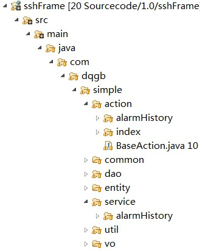
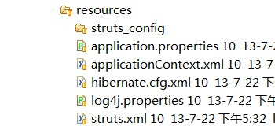
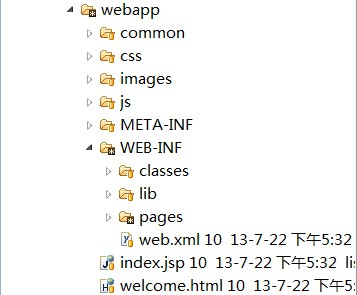

本框架采用struts2+spring+hibernate集成，多采用注解形式配置，免去了xml文件的繁琐配置。
1.0版本初步整合了三大框架，提供了框架的基本功能，较复杂内容如流程控制、权限控制等待以后版本补充和完善。
项目采用svn进行版本控制，maven进行项目管理，pom.xml提供了项目的构建，打包以及部署的脚本，只需调用对应mvn命令即可完场相关操作，可以大大提高开发效率。
项目的结构如下图所示：
|  | 左侧为java代码结构，包目录为com.dqgb.项目名.xx 下一级分别为action包，common常用类包，dao持久层包，entity实体类包，service业务类包，util为公用工具类包，vo为数据传输对象包。 各层按照模块再分包，每个模块值完成对应模块的功能，各个模块直接相互独立。 |
|  | resources文件夹内存放的是项目的配置文件，包括数据库连接，spring、struts和hibernate的基础配置文件以及log4j日志配置文件，编译后在classes文件夹下。 |
|  | webapp目录下为提供给客户端显示的内容，common目录中为公用的jsp文件，只要是js和css的导入以及meta的设置。 css文件夹中为项目中用到的css文件。 images目录中包含项目使用的图片和图标。 js目录中包含extjs文件夹和其他js文件。 web-inf文件夹对客户端是不可见的，其存放的是编译后的class文件和jar文件，其中pages包含所有的页面文件。 web.xml是项目启动配置，其中配置了spring、struts启动servlet，过滤器、监听器等。
|